Abstract
Background. Infants born preterm miss the last-trimester transfer of docosahexaenoic acid (DHA) and arachidonic acid (ARA), and their blood levels of both fall after birth. Over three decades, trials have tested LCPUFA-enriched formula, DHA-enriched human milk and direct enteral emulsions.
Methods. We searched PubMed, Europe PMC, ClinicalTrials.gov and ISRCTN, then chased citations from recent meta-analyses. We included RCTs in infants born before 37 weeks that compared enteral DHA and/or ARA (formula, maternal supplementation, or direct oil or emulsion) with placebo, unsupplemented feeds or a lower dose. Risk of bias was rated with RoB 2. Following Cochrane methods, risk ratios were pooled with inverse-variance random-effects models (DerSimonian–Laird), with prespecified subgroups for DHA alone vs DHA + ARA. Certainty of evidence was rated with GRADE.
Results. We included 41 RCTs reported in 115 papers:
- 23 trials of formula, mostly from 1990–2005;
- 16 neonatal trials of human-milk enrichment or direct enteral DHA, with or without ARA;
- 2 trials that supplemented toddlers born preterm.
Eleven placebo- or no-supplement-controlled neonatal trials contributed to the meta-analyses. Results by outcome:
- Severe ROP was probably lower with supplementation (5 trials; RR 0.55, 95% CI 0.40 to 0.74; I² 0%; low-certainty evidence). The effect persisted when high-risk-of-bias trials were excluded (RR 0.57 (0.42–0.78)). Under REML with Hartung–Knapp intervals, the overall effect remained (RR 0.54 (0.35–0.84)) but the analysis without high-risk trials did not (RR 0.57 (0.29–1.14)).
- BPD did not differ overall (6 trials; RR 1.10, 95% CI 0.95 to 1.28; moderate certainty). DHA alone increased BPD (RR 1.16, 95% CI 1.04 to 1.29), whereas DHA + ARA did not (RR 0.92, 95% CI 0.69 to 1.23). The test for subgroup differences was not significant (Chi² = 2.16, P = 0.14).
- NEC (RR 0.69 (0.41–1.15); very low certainty), late-onset sepsis (RR 0.92 (0.79–1.08)) and death before discharge (RR 0.79 (0.52–1.19)) showed no clear effect.
- Neurodevelopment showed no consistent benefit. The 5-year IQ gain in N3RO was not replicated at 7 years in DINO.
Four new trials are registered as recruiting, active or of unknown status, and two follow-ups of included trials are active. PRELUDE is the only one with BPD as its primary outcome. Six completed trials have no peer-reviewed results.
Conclusion. The best-supported effects are a possible reduction in severe ROP when ARA is given with DHA, and a small BPD signal with high-dose DHA alone. Neither is yet established at high certainty. There is no consistent neurodevelopmental benefit.
Methods
Eligibility and search
The protocol (protocol.md) set the following eligibility criteria:
- Population: infants born before 37 weeks' gestation.
- Intervention: enteral DHA and/or ARA by any vehicle.
- Comparator: placebo, standard feeds or a lower dose.
- Design: randomised allocation.
- Excluded: parenteral lipid-emulsion trials, antenatal-only supplementation, multi-nutrient packages, and trials reporting only biochemical outcomes.
Searches ran on 10 November 2026:
- PubMed, using MeSH and free text for DHA/ARA/LCPUFA/fish oil, preterm/low birth weight, and randomised (505 records);
- Europe PMC (460 records, including preprints);
- ClinicalTrials.gov API v2, two strategies (99 unique records);
- ISRCTN (11 records).
ANZCTR could not be queried programmatically because it serves a bot challenge. Australian trials were therefore traced through their publications. WHO ICTRP and the EU Clinical Trials Register were not reachable. Exact queries and hit counts are in search_log.csv.
Screening, extraction and synthesis
Screening had two stages. Rule-based title exclusions came first. A structured, LLM-assisted abstract screen followed, and one reviewer checked every inclusion and borderline record. Each record's decision and reason is listed in screening.csv.
Outcome counts came from open-access full texts where available: MOBYDIck (abstract only), Mega Donna Mega, ImNuT, Bernabe-García 2021, Abou El Fadl, Afroz, Baack and Sabzevari. Otherwise they came from abstracts. Where only a risk ratio and confidence interval were published, as for MOBYDIck and Bernabe-García 2019, those trials entered the analysis by generic inverse variance.
We followed the Cochrane Handbook for Systematic Reviews of Interventions and RevMan conventions:
- Effect measures. Risk ratios (RR) with 95% CIs for dichotomous outcomes; mean differences (MD) for standard developmental scores.
- Model. Inverse-variance random-effects meta-analysis with the DerSimonian–Laird estimate of between-study variance (Tau²). This is RevMan's "IV, Random" method. It lets trials reporting only an adjusted risk ratio enter alongside trials with event counts (generic inverse variance, marked † in the forest plots).
- Zero cells. 0.5 was added to every cell of a trial with a zero cell. Trials with no events in either arm were listed as "not estimable".
- Heterogeneity. Assessed with Tau², the Chi² test (P < 0.10) and I². Values of I² were read as might not be important (0–40%), moderate (30–60%), substantial (50–90%) or considerable (75–100%).
- Subgroup analysis. DHA alone (including fish oil) vs DHA + ARA, prespecified, with a Chi² test for subgroup differences.
- Sensitivity analyses. Fixed-effect model; exclusion of high risk-of-bias trials; count-data trials only; REML with Hartung–Knapp intervals; and, for BPD, adding the DINO subgroup under 1250 g.
- Certainty of evidence. GRADE, presented in a Summary of findings table with absolute effects per 1000 infants. Assumed control risks are the pooled control-group risks of the count-based trials.
Results
Study flow and characteristics
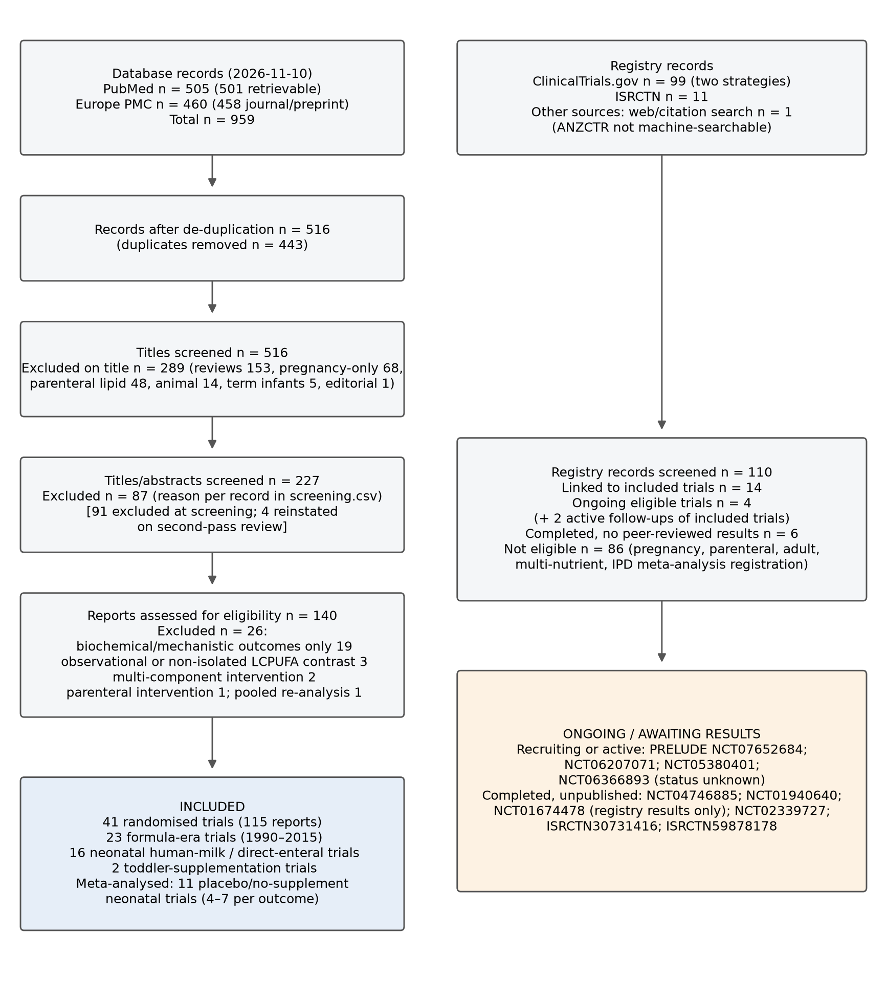
Of 516 de-duplicated records:
- 289 were excluded on title;
- 87 were excluded on abstract;
- 26 were excluded at eligibility, 19 of them because they reported biochemical outcomes only;
- 114 database reports, plus the BMC Pediatrics publication of the Sabzevari trial, describe the 41 included trials.
Full characteristics are in included_trials.csv.
Three generations of trials can be distinguished:
- Formula trials (1990–2015). These supplemented formula-fed infants at roughly human-milk concentrations. The Cochrane review of 17 such trials reported a median DHA concentration of 0.33% of total fatty acids (Moon 2016).
- High-dose DHA-alone trials. These aimed to match intrauterine accretion, using tuna oil given to lactating mothers in DINO (Makrides 2009), a 60 mg/kg/d enteral emulsion in N3RO (Collins 2017), and maternal algal oil in MOBYDIck (Marc 2020).
- Combined ARA:DHA emulsions. These gave ARA 100 + DHA 50 mg/kg/d from birth, in Mega Donna Mega (Hellström 2021) and ImNuT (Wendel 2023).
Smaller direct-enteral trials came from Mexico, Iran, Egypt, Bangladesh and the USA.
| Trial | Country | N randomised | Population | Intervention | Comparator | Primary outcome |
|---|---|---|---|---|---|---|
| DINO (Makrides 2009) | Australia | 657 | <33 wk | Maternal tuna oil ± high-DHA formula (~1% TFA) to term | ~0.3% DHA (soy oil) | Bayley MDI 18 mo |
| N3RO (Collins 2017) | Australia, NZ, Singapore | 1273 | <29 wk | DHA emulsion 60 mg/kg/d to 36 wk PMA | Soy emulsion | Physiological BPD |
| MOBYDIck (Marc 2020) | Canada | 528 infants (461 mothers) | <29 wk, breastfed | Maternal algal DHA 1.2 g/d to 36 wk PMA | Placebo capsules | BPD-free survival |
| Mega Donna Mega (Hellström 2021) | Sweden | 206 (ITT) | <28 wk | ARA 100 + DHA 50 mg/kg/d to 40 wk PMA | Standard care (open-label) | Severe ROP |
| ImNuT (Wendel 2023) | Norway | 120 | <29 wk | ARA 100 + DHA 50 mg/kg/d to 36 wk PMA | MCT oil | Brain MRI maturation |
| Bernabe-García 2019 (2019) | Mexico | 110 | 1000–1500 g | DHA 75 mg/kg/d × 14 d | Sunflower oil | ROP |
| Bernabe-García 2021 (2021) | Mexico | 225 | 1000–1500 g | DHA 75 mg/kg/d × 14 d | Sunflower oil | NEC ≥IIa |
| Henriksen 2008 (2008) | Norway | 141 | <1500 g, human-milk fed | DHA 32 + ARA 31 mg/100 mL milk to discharge | Placebo oil | Cognition 6 mo |
| Khalesi 2018 (2018) | Iran | 160 | <32 wk, <1500 g | Omega-3 300 mg/d | Sterile water | ROP |
| Sabzevari 2026 (2026) | Iran | 62 | <34 wk | DHA 60 mg/kg/d × 3 d | Standard care | NEC |
| Afroz 2025 (2025) | Bangladesh | 71 | <34 wk, <1800 g | Omega-3 40 mg/kg/d × 4 wk | None | ROP |
| Omega Tots (Keim 2018) | USA | 377 | Born <35 wk, aged 10–16 mo CA | DHA 200 + AA 200 mg/d × 6 mo | Corn oil | Bayley-III cognitive |
Risk of bias
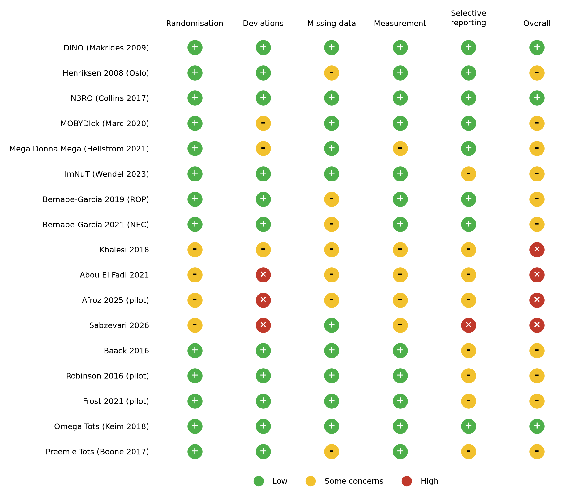
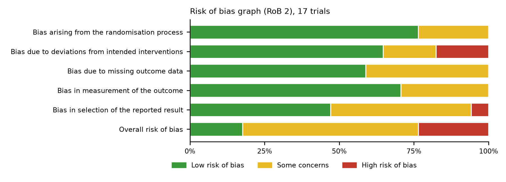
- Low overall risk: N3RO, DINO and Omega Tots, which were blinded, centrally randomised and had low attrition.
- Some concerns: MOBYDIck, which stopped early for possible harm, and Mega Donna Mega, which used no placebo. In Mega Donna Mega the ROP screeners were masked but respiratory care was not.
- High risk: four small trials that were open-label or used poorly matched placebos (Khalesi, Abou El Fadl, Afroz, Sabzevari).
The judgements are tabulated in rob.csv. Formula-era trials were not re-rated. The Cochrane review judged 10 of its 17 to be at low risk in most domains (Moon 2016).
Summary of findings
Summary of findings 1. Enteral LCPUFA (DHA ± ARA) compared with placebo or no supplementation for preterm infants
Patient or population: infants born preterm (mostly <29–32 weeks' gestation or <1500 g). Setting: neonatal intensive care units in Australia, New Zealand, Singapore, Canada, Sweden, Norway, Mexico, Iran, Egypt, Bangladesh and the USA. Intervention: enteral DHA alone (direct emulsion, fish oil or maternal supplementation) or DHA + ARA. Comparison: placebo oil or standard care.
| Outcome | Risk with control (per 1000) | Risk with LCPUFA (per 1000; 95% CI) | Relative effect (95% CI) | No. of participants (studies) | Certainty of the evidence (GRADE) | Comments |
|---|---|---|---|---|---|---|
| BPD at 36 weeks' PMA | 418 | 461 (398 to 534) | RR 1.10 (0.95 to 1.28) | 1657+ (6 RCTs, 1 as reported RR) | ⊕⊕⊕◯ Moderate | Downgraded once for imprecision (CI spans no effect and a 28% relative increase). DHA-alone subtotal RR 1.16 (1.04–1.29); DHA+ARA RR 0.92 (0.69–1.23). |
| Severe ROP (stage ≥3 / treated) | 199 | 109 (81 to 147) | RR 0.55 (0.40 to 0.74) | 547+ (5 RCTs, 1 as reported RR) | ⊕⊕◯◯ Low | Downgraded for risk of bias (open-label largest count-based trial; 2 high-risk trials) and suspected selective availability (severe-ROP counts unavailable from N3RO and MOBYDIck). |
| ROP, any stage | 380 | 316 (261 to 382) | RR 0.83 (0.69 to 1.00) | 607+ (6 RCTs, 1 as reported RR) | ⊕⊕◯◯ Low | Downgraded for risk of bias and imprecision. |
| NEC (Bell ≥II) | 122 | 84 (50 to 140) | RR 0.69 (0.41 to 1.15) | 648 (4 RCTs) | ⊕◯◯◯ Very low | Downgraded for risk of bias (most weight from an open-label trial with version-dependent counts), imprecision and inconsistency; N3RO/MOBYDIck counts unavailable. |
| Late-onset sepsis | 506 | 467 (399 to 547) | RR 0.92 (0.79 to 1.08) | 649 (5 RCTs) | ⊕⊕◯◯ Low | Downgraded for imprecision and inconsistent definitions (culture-proven vs suspected). |
| Death before discharge | 86 | 68 (45 to 103) | RR 0.79 (0.52 to 1.19) | 730+ (7 RCTs, 1 as reported RR) | ⊕⊕◯◯ Low | Downgraded twice for imprecision; N3RO mortality counts unavailable. Subgroup difference (P = 0.04) not considered credible (small trials). |
| Bayley cognitive/MDI, 18–22 mo | Mean score ~92–100 | MD 1.02 higher (1.10 lower to 3.14 higher) | — | (2 RCTs) | ⊕⊕◯◯ Low | Downgraded for imprecision and for selective availability (only 2 of ≥4 high-dose trials report compatible data). |
| Full-scale IQ, 5–7 y | Mean score ~92–100 | MD 1.47 higher (2.20 lower to 5.14 higher) | — | (2 RCTs) | ⊕⊕◯◯ Low | Downgraded for inconsistency (I² 70%: N3RO +3.45 vs DINO −0.30) and imprecision. |
The risk in the intervention group (and its 95% CI) is based on the assumed risk in the comparison group and the relative effect of the intervention. CI: confidence interval; RR: risk ratio; MD: mean difference. "+" means the total also includes trials entered as a reported RR. GRADE certainty: ⊕⊕⊕⊕ high; ⊕⊕⊕◯ moderate; ⊕⊕◯◯ low; ⊕◯◯◯ very low. The table is also available as summary_of_findings.csv.
Data and analyses
Comparison 1. Enteral LCPUFA (DHA ± ARA) vs placebo or no supplementation
| Outcome or subgroup | Studies | Participants | Statistical method | Effect size |
|---|---|---|---|---|
| 1.1 Bronchopulmonary dysplasia at 36 wk PMA | 6 | 1657+ | Risk Ratio (IV, Random, 95% CI) | 1.10 [0.95, 1.28] |
| 1.1.1 DHA alone (including fish oil) | 4 | 1341+ | Risk Ratio (IV, Random, 95% CI) | 1.16 [1.04, 1.29] |
| 1.1.2 DHA + ARA | 2 | 316 | Risk Ratio (IV, Random, 95% CI) | 0.92 [0.69, 1.23] |
| 1.2 Severe retinopathy of prematurity | 5 | 547+ | Risk Ratio (IV, Random, 95% CI) | 0.55 [0.40, 0.74] |
| 1.2.1 DHA alone (including fish oil) | 3 | 231+ | Risk Ratio (IV, Random, 95% CI) | 0.55 [0.32, 0.96] |
| 1.2.2 DHA + ARA | 2 | 316 | Risk Ratio (IV, Random, 95% CI) | 0.47 [0.29, 0.76] |
| 1.3 Retinopathy of prematurity, any stage | 6 | 607+ | Risk Ratio (IV, Random, 95% CI) | 0.83 [0.69, 1.00] |
| 1.3.1 DHA alone (including fish oil) | 4 | 291+ | Risk Ratio (IV, Random, 95% CI) | 0.78 [0.53, 1.13] |
| 1.3.2 DHA + ARA | 2 | 316 | Risk Ratio (IV, Random, 95% CI) | 0.86 [0.68, 1.09] |
| 1.4 Necrotising enterocolitis (Bell ≥II) | 5 | 648 | Risk Ratio (IV, Random, 95% CI) | 0.69 [0.41, 1.15] |
| 1.4.1 DHA alone (including fish oil) | 3 | 322 | Risk Ratio (IV, Random, 95% CI) | 0.32 [0.04, 2.39] |
| 1.4.2 DHA + ARA | 2 | 326 | Risk Ratio (IV, Random, 95% CI) | 0.95 [0.45, 2.01] |
| 1.5 Late-onset sepsis | 5 | 649 | Risk Ratio (IV, Random, 95% CI) | 0.92 [0.79, 1.08] |
| 1.5.1 DHA alone (including fish oil) | 3 | 329 | Risk Ratio (IV, Random, 95% CI) | 0.93 [0.68, 1.28] |
| 1.5.2 DHA + ARA | 2 | 320 | Risk Ratio (IV, Random, 95% CI) | 0.83 [0.65, 1.06] |
| 1.6 Death before discharge | 7 | 730+ | Risk Ratio (IV, Random, 95% CI) | 0.79 [0.52, 1.19] |
| 1.6.1 DHA alone (including fish oil) | 5 | 403+ | Risk Ratio (IV, Random, 95% CI) | 0.58 [0.35, 0.95] |
| 1.6.2 DHA + ARA | 2 | 327 | Risk Ratio (IV, Random, 95% CI) | 1.32 [0.70, 2.48] |
| 1.7 Bayley cognitive/MDI at 18–22 months | 2 | — | Mean Difference (IV, Random, 95% CI) | 1.02 [-1.10, 3.14] |
| 1.8 Full-scale IQ at 5–7 years | 2 | — | Mean Difference (IV, Random, 95% CI) | 1.47 [-2.20, 5.14] |
Effects of interventions
1.1 Bronchopulmonary dysplasia
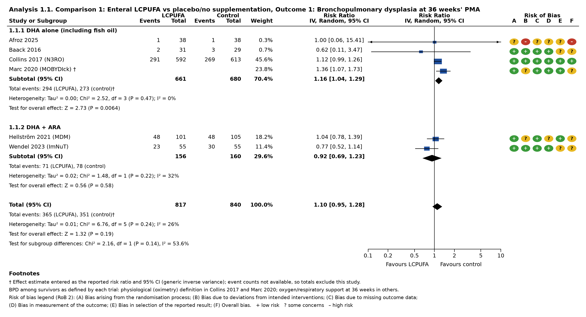
Overall, enteral LCPUFA did not reduce BPD (RR 1.10, 95% CI 0.95 to 1.28; 6 trials; I² = 26%; moderate-certainty evidence). The subgroups diverged:
- DHA alone increased BPD (RR 1.16, 95% CI 1.04 to 1.29; 4 trials; I² = 0%). N3RO dominates this subgroup. Physiological BPD occurred in 291/592 infants given DHA and 269/613 controls (adjusted RR 1.13, 1.02–1.25) (Collins 2017). In MOBYDIck, which was stopped early, BPD among survivors was more frequent with maternal DHA (RR 1.36, 1.07–1.73) (Marc 2020).
- DHA + ARA did not increase BPD (RR 0.92, 95% CI 0.69 to 1.23; 2 trials). In ImNuT, BPD was 23/55 vs 30/55 (Wendel 2023). In Mega Donna Mega it was 48/101 vs 48/105, with no increase in severity (Wackernagel 2024).
The test for subgroup differences was not significant (Chi² = 2.16, df = 1, P = 0.14, I² = 54%). The contrast is also confounded by trial era, vehicle and control oil. The overall result changed little under alternative assumptions:
- fixed-effect model: RR 1.12 (1.01–1.23);
- adding the DINO subgroup under 1250 g, which reported a reduction (RR 0.75, 0.57–0.98) (Manley 2011): RR 1.01 (0.83–1.22).
These results agree with a meta-analysis that pooled more trials: RR 1.11 (1.00–1.22) overall and 1.15 (1.03–1.28) for DHA alone (Dang 2025). An individual-participant analysis of N3RO and MOBYDIck found no excess of severe BPD (RR 1.06, 0.93–1.21) (Marc 2025).
A biologically coherent explanation is that DHA alone deepens the postnatal ARA deficit. In N3RO, DHA "modestly exacerbated the decline in AA" (Gibson 2026). In Mega Donna Mega, higher ARA levels were associated with less severe BPD (Wackernagel 2024).
1.2 Severe retinopathy of prematurity
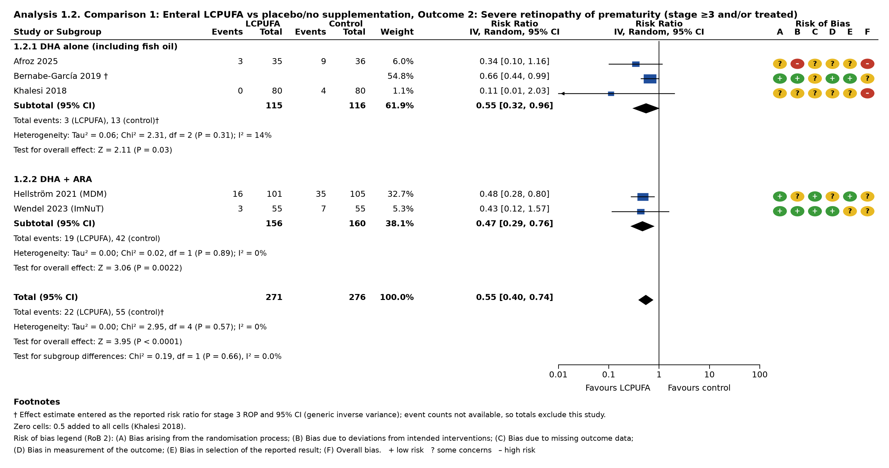
Supplementation reduced severe ROP (RR 0.55, 95% CI 0.40 to 0.74; 5 trials; I² = 0%; low-certainty evidence). The effect was similar with DHA alone (RR 0.55 (0.32–0.96)) and with DHA + ARA (RR 0.47 (0.29–0.76)); the test for subgroup differences gave P = 0.66.
- Mega Donna Mega provides the largest count-based result: 16/101 vs 35/105 (adjusted RR 0.50, 0.28–0.91), with masked ROP screening (Hellström 2021).
- Bernabe-García 2019 contributes a reported RR of 0.66 (0.44–0.99) for stage 3 ROP (Bernabe-García 2019).
The result held under REML with Hartung–Knapp intervals (RR 0.54 (0.35–0.84)) and after excluding the two high risk-of-bias trials (RR 0.57 (0.42–0.78)). It did not hold when both restrictions were applied together (Hartung–Knapp without high-risk trials: RR 0.57 (0.29–1.14)). Certainty was downgraded for two reasons. First, the weightiest count-based trial was open-label. Second, severe-ROP counts were unavailable from N3RO and MOBYDIck; N3RO reported no difference in ROP (Collins 2017). An independent 2026 meta-analysis of 13 RCTs reached a similar estimate (RR 0.66, 0.51–0.86) (Zhang 2026).
1.3 Retinopathy of prematurity, any stage
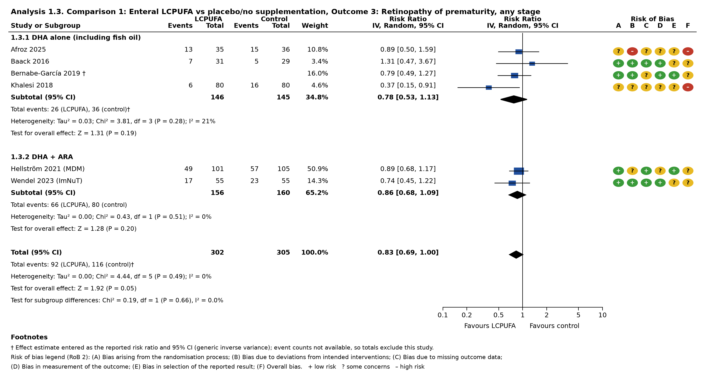
Any-stage ROP was borderline lower (RR 0.83, 95% CI 0.69 to 1.00; 6 trials; I² = 0%; low certainty). This fits an effect mainly on progression to severe disease.
1.4 Necrotising enterocolitis
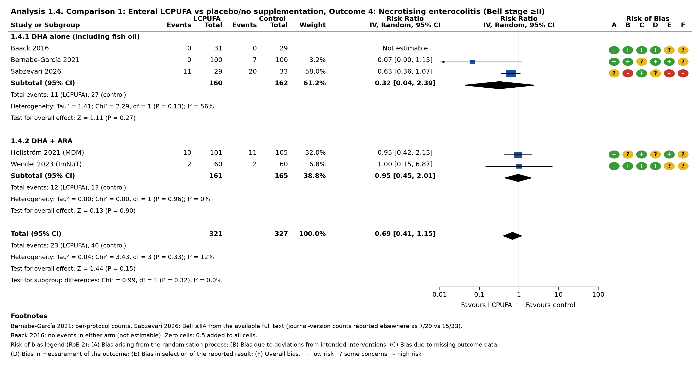
The effect on NEC is uncertain (RR 0.69, 95% CI 0.41 to 1.15; 4 trials, 1 not estimable; very low-certainty evidence).
- Bernabe-García 2021 reported confirmed NEC in 0/100 vs 7/100 (per protocol) (Bernabe-García 2021).
- The two ARA:DHA trials showed no difference.
- Sabzevari 2026 is an open-label trial of a 3-day regimen and carries 58% of the weight. The accessible full text gives Bell ≥IIA NEC as 11/29 vs 20/33. A news summary of the journal version reports 7/29 vs 15/33 (Sabzevari 2026). DHA recipients also had more neutropenia (6/29 vs 0/33).
Two trials were not pooled:
- Abou El Fadl 2021 reported only stage I NEC (Abou El Fadl 2021).
- Carlson 1998 was a multi-component egg-phospholipid formula trial (stage II–III NEC 2.9% vs 17.6%) (Carlson 1998).
1.5 Late-onset sepsis
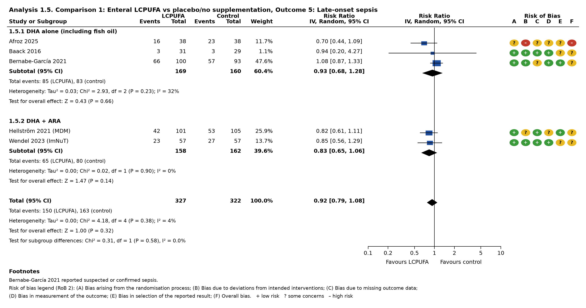
Late-onset sepsis was not clearly affected (RR 0.92, 95% CI 0.79 to 1.08; 5 trials; I² = 4%; low certainty).
1.6 Death before discharge
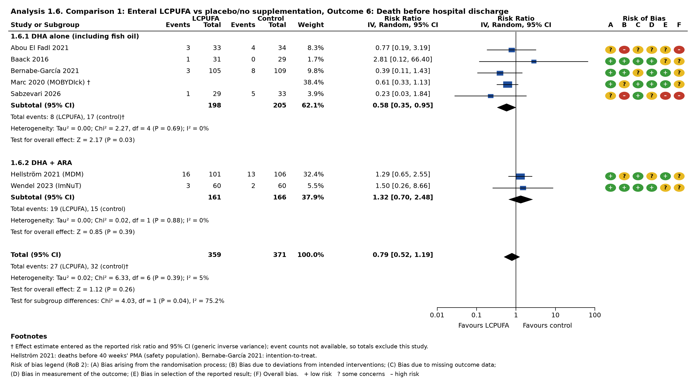
Mortality was not significantly reduced (RR 0.79, 95% CI 0.52 to 1.19; 7 trials; low certainty). The test for subgroup differences was nominally significant: DHA alone RR 0.58 (0.35–0.95) vs DHA + ARA RR 1.32 (0.70–2.48) (P = 0.04, I² = 75%). This difference rests on few events, and the DHA-alone estimate leans on MOBYDIck's non-significant reported RR plus small trials, so it is not considered credible. Excluding high risk-of-bias trials gave RR 0.84 (0.51–1.39).
Sensitivity analyses
| Analysis | BPD at 36 weeks' PMA | Severe ROP (stage ≥3 / treated) | ROP, any stage | NEC (Bell ≥II) | Late-onset sepsis | Death before discharge |
|---|---|---|---|---|---|---|
| Primary: IV random-effects (DerSimonian–Laird) | 1.10 (0.95–1.28) | 0.55 (0.40–0.74) | 0.83 (0.69–1.00) | 0.69 (0.41–1.15) | 0.92 (0.79–1.08) | 0.79 (0.52–1.19) |
| Fixed-effect (inverse variance) | 1.12 (1.01–1.23) | 0.55 (0.40–0.74) | 0.83 (0.69–1.00) | 0.68 (0.44–1.06) | 0.93 (0.80–1.08) | 0.79 (0.53–1.17) |
| Excluding high risk-of-bias studies | 1.10 (0.93–1.29) | 0.57 (0.42–0.78) | 0.86 (0.70–1.06) | 0.65 (0.20–2.15) | 0.96 (0.82–1.13) | 0.84 (0.51–1.39) |
| Excluding studies entered as reported RR (count data only) | 1.08 (0.97–1.20) | 0.43 (0.28–0.68) | 0.83 (0.66–1.05) | — | — | 0.92 (0.54–1.57) |
| REML + Hartung–Knapp (original analysis) | 1.09 (0.87–1.37) | 0.54 (0.35–0.84) | 0.83 (0.65–1.07) | 0.68 (0.32–1.45) | 0.90 (0.68–1.19) | 0.78 (0.43–1.41) |
Full results: ma_sensitivity_cochrane.csv.
Neurodevelopment, vision and growth
Neonatal LCPUFA does not reliably improve global cognition. Isolated benefits have not replicated across trials or ages.
Formula era. The Cochrane review found no effect on Bayley MDI at 12 months (MD 0.96, −1.42 to 3.34) or at 18 months (MD 2.40, −0.33 to 5.12). It also found transient weight and length gains at 2 months post-term (Moon 2016). Some individual trials did report benefits:
- Clandinin 2005: higher Bayley scores at 118 weeks' PMA (Clandinin 2005).
- O'Connor 2001: better motor development in infants ≤1250 g (O'Connor 2001).
- Fewtrell 2004: higher MDI in boys (Fewtrell 2004).
Long-term follow-up has not been favourable. At about 10 years there was no overall cognitive difference (Isaacs 2011). Record linkage of the UK formula trials found that participants randomised to LCPUFA formula, preterm and term alike, scored lower in English and mathematics at age 11 (Verfürden 2021).
High-dose era. Two generic inverse-variance analyses pooled the high-dose trials.
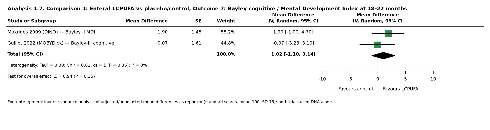
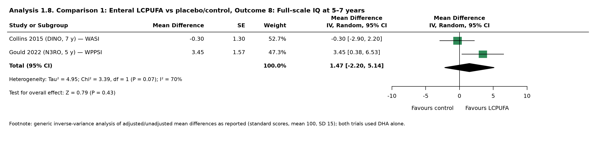
The pooled results are:
- Bayley cognitive/MDI at 18–22 months, from DINO and MOBYDIck (Analysis 1.7): MD 1.02 (95% CI -1.10 to 3.14; I² 0%);
- full-scale IQ at 5–7 years (Analysis 1.8): MD 1.47 (95% CI -2.20 to 5.14), with I² 70% (ma_continuous.csv).
The heterogeneity reflects divergent trial results:
- N3RO found a 5-year IQ gain (95.4 vs 91.9; adjusted difference 3.45, 0.38–6.53) (Gould 2022) but no behavioural difference (Gould 2024).
- DINO found no IQ difference at 7 years (MD −0.3, −2.9 to 2.2) (Collins 2015).
- MOBYDIck showed no Bayley-III effect (Guillot 2022) and no 5-year behavioural effect (Paquet 2024).
- ImNuT showed no 2-year Bayley-III difference (Gunnarsdottir 2025).
Mega Donna Mega reported larger white-matter volume at term as a secondary outcome (Hellström 2026). Its 2.5-year visual-acuity follow-up was inconclusive because 42% of the data were missing (Lundgren 2023).
These findings agree with published syntheses:
- For infants under 29 weeks, there was no overall difference in global cognition, with a possible reduction in mild impairment (Shepherd 2025).
- Across 13 RCTs, there was no clear IQ effect but a possible reduction in intellectual disability (RR 0.58, 0.36–0.93) (Liu 2025).
Supplementing toddlers born preterm did not improve Bayley-III cognition (difference in change 0.5, −1.8 to 2.8) (Keim 2018).
Ongoing and unpublished trials
Details for all entries are in ongoing_trials.csv.
| Registry ID | Status | Country | N | Intervention vs comparator | Primary outcome | Expected |
|---|---|---|---|---|---|---|
| NCT07652684 (PRELUDE) | Recruiting | Greece | 74 | ARA:DHA 2:1 vs routine care | BPD at 36 wk PMA | 2026-11 |
| NCT06207071 | Active, not recruiting | USA | 152 | DHA/ARA in human milk × 3 wk vs none (growth-restricted infants) | Head circumference at 36 wk | 2027-04 |
| NCT05380401 | Recruiting | USA | 328 | Enteral DHA/ARA (continuous or stopped at 32 wk) vs none | Fatty acids, pro-resolving mediators | 2027-04 |
| NCT06366893 | Unknown (last: recruiting) | Spain | 80 | DHA+AA emulsion × 28 d vs none | RBC DHA/AA | 2025-03 (overdue) |
| NCT03555019 (ImNuT follow-up) | Active, not recruiting | Norway | 121 | ARA:DHA vs MCT | Long-term follow-up | — |
| NCT05191823 (Omega Tots LTFU) | Active, not recruiting | USA | 377 | DHA+AA vs corn oil (toddlers) | Cognition and language at 8–10 y | First report 2026 |
| NCT04746885 | Completed 2020, unpublished | Egypt | 80 | DHA 100 mg/d × 30 d vs placebo | NEC | — |
| NCT01940640 | Completed 2013, unpublished | Spain | 40 | Maternal DHA 900 mg/d vs control | Milk/blood fatty acids | — |
| NCT01674478 (EMLFO-2) | Completed 2015, registry results only | USA | 18 | Microlipid + fish oil vs Microlipid (enterostomy) | Inflammatory markers | — |
| NCT02339727 | Completed 2013, unpublished | Spain | 40 | Formula n-6:n-3 2:1 vs 1:1 | Blood fatty acids | — |
| ISRCTN30731416 | Ended 2009, no results found | — | 50 | Maternal omega-3 dose finding | Milk/infant fatty acids | — |
| ISRCTN59878178 | Ended 2006, no results found | UK | 42 | LCPUFA vs standard milk fortifier | Body composition | — |
The pipeline is small and mostly mechanistic. No large, placebo-controlled ARA:DHA trial powered for severe ROP or BPD is registered. Six completed trials, more than 250 infants in total, have no peer-reviewed results, so publication bias cannot be excluded for small-trial outcomes such as NEC.
Discussion
The evidence has moved in three stages:
- Early formula supplementation at human-milk concentrations was safe and supported transient growth gains, but produced no durable cognitive benefit.
- High-dose DHA alone, at fetal accretion rates, failed to reduce BPD and in N3RO and MOBYDIck may have increased it. Its cognitive results conflict: N3RO found a 5-year IQ gain and DINO found nothing at 7 years.
- Combined ARA:DHA emulsions produced the most promising clinical result, a halving of severe ROP in Mega Donna Mega, without the BPD signal.
The most coherent reading of these trials is the "balance" hypothesis. Preterm infants are deficient in both fatty acids, and supplementing DHA alone shifts the ARA:DHA ratio further from fetal levels. Two observations support it: the ARA decline worsened with DHA alone in N3RO (Gibson 2026), and ARA levels tracked lung and retinal outcomes in Mega Donna Mega (Wackernagel 2024). The hypothesis remains plausible rather than proven. Only two adequately sized ARA:DHA trials (326 infants) exist, one of them open-label. The BPD subgroup difference, DHA alone RR 1.16 (1.04–1.29) vs DHA + ARA RR 0.92 (0.69–1.23), was not statistically significant (P = 0.14).
Limitations
Several features of this review limit confidence in its results:
- Single reviewer. Screening and risk-of-bias assessment were done by one reviewer with LLM assistance, not two independent reviewers.
- Incomplete database coverage. Embase, CENTRAL, CINAHL, WHO ICTRP, EU-CTR and ANZCTR were not searched directly.
- Missing outcome data. Secondary morbidity counts for N3RO, MOBYDIck, DINO, Carlson 1998 and the two Chicago pilot trials could not be extracted. As a result, the pooled ROP, NEC and sepsis estimates leave out the two largest DHA-alone trials.
- Few trials per subgroup. With only two to five trials per subgroup, the subgroup tests have little power.
- Model choice. DerSimonian–Laird intervals can be too narrow when trials are few. Under Hartung–Knapp intervals, the severe-ROP effect was no longer significant once high-risk trials were excluded (RR 0.57, 0.29–1.14).
- Inconsistent outcome definitions. BPD definitions differed across trials: oximetry-based in N3RO and MOBYDIck, oxygen need in the others.
Conclusions
The current RCT evidence does not support routine high-dose DHA alone in very preterm infants. It shows a possible increase in BPD and inconsistent, at most modest, cognitive effects. Combined ARA:DHA enteral supplementation from birth is the most promising strategy, mainly for severe ROP, but it rests on two trials and needs confirmation in a large, blinded, placebo-controlled trial with ROP and BPD as co-primary outcomes. Until then, supplementation decisions belong to neonatal teams and guideline bodies.
This review summarises research evidence and is not clinical guidance for individual patients.
Data files
- summary_of_findings.csv: GRADE Summary of findings table.
- ma_sensitivity_cochrane.csv: Cochrane-style primary and sensitivity analyses.
- Analysis 1.1–1.8 forest plots: saved as separate PNG files.
- included_trials.csv: characteristics of all 41 trials and their linked reports.
- ongoing_trials.csv: ongoing and unpublished trials.
- screening.csv: screening decision and reason for each of the 516 records.
- search_log.csv: queries and hit counts.
- rob.csv: risk-of-bias judgements with rationales.
- Original REML/Hartung–Knapp outputs, retained for transparency: ma_pooled.csv, ma_trial_effects.csv, ma_subgroups.csv, ma_sensitivity.csv, ma_continuous.csv: meta-analysis outputs.
Appendix: characteristics of included studies (all 41 trials)
| ID | Study | Stratum | Country | N randomised | Participants | Vehicle | LCPUFA | Comparator | Primary outcome | Key findings (abstract-level) | Registration | Primary report |
|---|---|---|---|---|---|---|---|---|---|---|---|---|
| T01 | Uauy 1990 / Birch 1992 (Dallas) | A formula (neonatal) | USA | 32 neonates randomised to three formula groups (A, B, C); 10 additional infants fed human milk (not randomised) | Very-low-birth-weight neonates, birth weight 1000-1500 g; GA not reported in abstract | formula | fish oil (DHA+EPA) | soy-oil or corn-oil formula | Retinal function by electroretinogram (cone function; rod ERG thresholds). Primary outcome not explicitly stated in abstract | Plasma and RBC fatty acid profiles similar at entry, diverged after diets. Group C comparable to human milk-fed group; Group A had lower 22:6 omega-3 and omega-3 LCPUFA. Cone function unaffected by dietary EFA. Group A rod ERG thresholds higher than human milk and Group C; correlated with RBC omega-3 LCPUFA (r = -0.63, p<0.0001); 44% of variance explained by RBC and plasma omega-3 LCPUFA. | 10.1203/00006450-199011000-00014 | |
| T02 | Carlson 1993 (Memphis I) | A formula (neonatal) | USA | Not stated in the abstract provided | Healthy preterm infants; gestational age and birth weight inclusion criteria not stated in the abstract provided | formula | fish oil (DHA+EPA) | standard formula | Visual acuity measured by the Teller Acuity Card procedure | Marine oil (P < 0.001) and age (P < 0.0001) influenced visual acuity (repeated-measures ANOVA). Marine-oil group had better acuity than standard-formula group at 2 and 4 months (Fisher's LSD). Acuity improved in both groups through 6.5 months, then plateaued. Through 4 months, acuity was inversely related to oxygen supplementation (log10 h) and positively related to DHA status (GLM). After 4 months, birth weight and gestational age were the only consistent correlates. | 10.1093/ajcn/58.1.35 | |
| T03 | Carlson 1996 / Werkman 1996 (Memphis II) | A formula (neonatal) | USA | 59 preterm infants (randomized; double-blind trial) | Preterm infants, birth weight 747-1275 g; some required prolonged supplemental oxygen and developed bronchopulmonary dysplasia (BPD). Gestational age inclusion not stated in abstract. | formula | fish oil (DHA+EPA) | standard formula | Visual acuity (Teller Acuity Card) and growth (weight, length, head circumference, weight-for-length); plasma phosphatidylcholine arachidonic acid. Primary outcome not explicitly designated in abstract. | n-3 LCFAs improved early (2-mo) but not later acuity among infants without BPD (P<0.02). Infants with BPD had poorer grating acuity at 2 (P<0.0002) and 4 (P<0.04) mo regardless of diet. n-3 LCFA infants weighed less at 6 and 9 mo and had smaller head circumference at 9 mo; lower weight-for-length at 2, 6, 9, 12 mo. Plasma PC AA not influenced by BPD or n-3 LCFAs. | 10.1093/ajcn/63.5.687 | |
| T04 | Koletzko 1995 | A formula (neonatal) | Germany | 19 randomized to formula groups (10 without LCP, 9 with LCP); 8 additional infants received their own mother's milk fortified with FM-85 (not randomized); 27 enrolled in total | Low birthweight infants enrolled when tolerating full enteral feeding (≥130 ml milk/kg/day). Mean birthweight ~1218–1280 g and mean gestational age ~30–31 weeks across groups (mean ± SD as reported) | formula | DHA+ARA | standard formula | Not stated in the provided abstract (truncated); growth and feeding tolerance (gastric residuals, spitting, abdominal distention, stool firmness) are reported outcomes | Three feeding groups did not differ in growth or feeding tolerance (gastric residuals, spitting, abdominal distention) over 21 days; firm stools were noted more frequently in the two formula groups. Abstract truncated at 250 words, so further findings are not available. | 10.1097/00005176-199508000-00012 | |
| T05 | Faldella 1996 | A formula (neonatal) | Italy | 58 healthy preterm infants enrolled (breast milk n=12; PF-LCP n=21; PF n=25); note the abstract describes the groups as fed by feeding type and does not explicitly state randomisation | Healthy preterm infants; gestational age and birth weight inclusion criteria not stated in the abstract | formula | DHA+ARA | standard formula | Not explicitly designated in the abstract. Outcomes assessed: flash visual evoked potentials (VEPs), flash electroretinography (ERG), brainstem acoustic evoked potentials (BAEPs), and red blood cell membrane fatty acid composition | Breast milk and PF-LCP groups had similar VEP morphology and latencies; PF group had quite different morphology and significantly longer wave latencies. Erythrocyte LCP, especially DHA, was higher in breast milk and PF-LCP groups than PF. ERG and BAEP were the same in all three groups. Authors suggest well-balanced LCP supplementation may positively influence VEP maturation when breast milk is unavailable. | 10.1136/fn.75.2.f108 | |
| T06 | Stier 1997 | A formula (neonatal) | Germany | 30 infants randomised into three arms of 10 each (LCP-enriched preterm formula, standard preterm formula, or expressed breast milk); double-blind, prospective | Healthy preterm infants during the first weeks of life; gestational age and birth weight inclusion criteria not stated in abstract | formula | DHA+ARA | standard formula | In vivo formation of prostaglandin E2, thromboxane A2 and prostacyclin, measured as urinary excretion of index metabolites by gas chromatography-mass spectrometry; urine sampled and anthropometric measurements at study entry and after 3 weeks | No significant differences in urinary prostanoid excretion or anthropometric data between groups at end of study. Conclusion: neither conventional formula nor LCP supplementation for 3 weeks substantially influenced prostanoid formation in healthy preterm infants. | 10.1203/00006450-199710000-00015 | |
| T07 | Carlson 1998 (egg-phospholipid formula) | A formula (neonatal) | USA | Not stated in abstract (randomized, double-masked clinical study of diet and infant neurodevelopment; hospitalized preterm infants) | Hospitalized preterm infants; gestational age and birth weight inclusion criteria not stated in abstract | formula | DHA+ARA (egg phospholipid) | standard formula | Not explicitly stated in abstract; reported outcome was incidence of stage II and III necrotizing enterocolitis (NEC) | Stage II and III NEC was significantly lower with the experimental formula than control (2.9% vs 17.6%, p < 0.05). Rates of bronchopulmonary dysplasia (23.4% vs 23.5%), septicemia (26% vs 31%), and retinopathy of prematurity (38% vs 40%) were similar. Authors state a larger randomized trial is warranted. | 10.1203/00006450-199810000-00005 | |
| T08 | Vanderhoof 1999/2000 | A formula (neonatal) | USA | 288 enrolled; 77 supplemented formula, 78 control formula, 133 human milk (human milk group not randomised; formula groups randomised) | Preterm infants; GA/BW inclusion criteria not stated in the abstract | formula | DHA+ARA | standard formula | Not specified in the abstract. Outcomes reported: growth (anthropometrics at enrollment, first day of full oral feeding, 40 and 48 weeks PCA), acceptance (discontinuation, reasons, adverse events), and plasma fatty acid concentrations | Growth at enrollment, first full oral feeding, 40 and 48 weeks PCA did not differ between formula groups; human milk group initially grew more slowly. Severe adverse events were rare and not significantly different between formula groups. Supplemented formula and human milk groups had higher LCPUFA concentrations than control formula. Authors conclude safety and efficacy of the supplemented formula. | 10.1097/00005176-199909000-00015 | |
| T09 | Bouglé 1999 | A formula (neonatal) | France | Breast milk group n = 15 (4 dropped out); formula A (18-carbon PUFA only) n = 11 (2 dropped out); formula B (enriched with long-chain PUFA) n = 14 (1 dropped out). Note: the BM group was fed breast milk and not randomised; only A and B were randomly assigned. | Preterm infants enrolled on the 2nd day of enteral feeding (D0); gestational age and birth weight inclusion criteria not reported in the abstract. | formula | DHA+ARA | standard formula | Early neurological maturation: auditory and visual evoked potential parameters and nerve conduction velocity (NCV), with plasma and red blood cell phospholipid fatty acid composition, measured at D0 and D30. (Abstract does not explicitly designate a primary outcome.) | No difference between groups in D0-D30 changes in EP parameters. Motor NCV maturation slower in group B than the other two groups. Plasma linoleic acid changes higher in B than BM and A (P<0.05); arachidonic acid changes higher in BM vs B (P<0.02). RBC linoleic acid higher in formula groups than BM (P<0.05). No group differences in arachidonic or docosahexaenoic acid changes. Authors conclude a balanced n-6/n-3 PUFA supply without LC-PUFA allowed adequate early CNS maturation; LC-PUFA effects on NCV need confirmation. | 10.1016/s1388-2457(99)00094-2 | |
| T10 | Ryan 1999 | A formula (neonatal) | USA | 63 infants (32 males; 31 females) randomised; blinded RCT, May 1993 to September 1994 | Healthy low-birth-weight preterm infants, birth weight 940-2250 g; enrolled around hospital discharge (feeding began 7-10 days before discharge) | formula | DHA only (fish oil, low EPA) | standard formula | Not stated in the abstract. Outcomes evaluated: weight, length, head circumference; skinfold thicknesses (triceps, subscapular, suprailiac); arm, abdominal and chest circumferences; fat-free mass (FFM) by total body electrical conductivity (TOBEC); energy intake from formula. | In males, DHA formula gave smaller gains in weight, length and head circumference to 59 weeks PMA (P<0.05); at 59 weeks lower weight (P<0.05), shorter recumbent length (P<0.01), smaller head circumference (P<0.05) and lower FFM (P<0.01). No significant differences in females. Male energy intake lower at 51 and 59 weeks (P<0.05) but not significant when adjusted for body weight. Authors conclude DHA formula had a negative effect on male growth and body composition; they do not support adding DHA alone to formulas. | 10.1002/(SICI)1520-6300(1999)11:4<457::AID-AJHB5>3.0.CO;2-B | |
| T11 | Ramírez 2001 | A formula (neonatal) | Spain | 17 infants fed LCP-F (formula with n-6 and n-3 LCP from purified pig-brain phospholipids); 17 infants fed conventional formula F; 14 infants receiving human milk from a milk bank as reference (HM). Note: the abstract describes groups as "were fed" and does not explicitly state randomisation. | Low birth-weight infants; gestational age and birth-weight inclusion criteria not stated in the abstract | formula | DHA+ARA | standard formula | Not explicitly stated in the abstract. Stated aims: plasma content of 20:4n-6 and 22:6n-3 and plasma antioxidant capacity. Growth index was also measured. | Plasma 22:6n-3 was higher in LCP-F than F and closer to HM throughout. Total plasma lipid DHA at 15 days: 3.46±0.19 vs 2.08±0.20 mg/dl (P<0.001); at 30 days: 3.83±0.30 vs 2.15±0.20 mg/dl (P<0.001). 20:4n-6 was higher in LCP-F than F at 15 and 30 days. Plasma antioxidant capacity did not differ significantly between groups. | 10.1054/clnu.2000.0163 | |
| T12 | Demmelmair 2001 | A formula (neonatal) | Germany | 66 premature infants randomized (human milk group was nonrandomized) | Premature infants; gestational age and birth weight inclusion criteria not stated in the abstract | formula | GLA (borage) ± fish oil | standard formula | Not stated in the abstract. Outcomes reported: anthropometric measures, tocopherol and retinol status, and arachidonic acid (AA) content of plasma phospholipids. | No significant between-group differences in anthropometrics, tocopherol or retinol status. Plasma phospholipid AA was similar at study start and decreased by day 28 in all formula groups but not in breast-fed infants (ST 6.6 +/- 0.2%, BO 6.9 +/- 0.3%, BO + FOLOW 6.9 +/- 0.4%, BO + FOHIGH 6.7 +/- 0.2%, HM 8.6 +/- 0.5%; all formulas P<0.05 vs HM). GLA or fish oil addition had no significant influence; GLA had only a very limited effect on AA status. | 10.1007/s11745-001-0757-x | |
| T13 | O'Connor 2001 | A formula (neonatal + post-discharge) | USA, UK, Chile | 470 formula-fed (3 arms) + 43 human-milk reference | BW 750–1800 g | formula | DHA+ARA | standard formula | Growth, visual acuity, development | Growth not impaired; some developmental and visual measures favoured LCPUFA arms at 6–14 mo CA (abstract-level). | 10.1542/peds.108.2.359 | |
| T14 | Innis 2002 | A formula (neonatal) | Canada, USA | 194 premature infants (randomized to control, DHA, or DHA+ARA preterm formula; 90 breast-fed term infants served as reference, not randomized) | Formula-fed premature infants; gestational age/birth weight inclusion criteria not stated in the abstract | formula | DHA ± ARA | standard formula | Not stated in the abstract (growth and visual acuity were the study aims; growth outcomes reported as weight gain, weight, weight:length ratio, and length; visual acuity and adverse events also reported) | DHA+ARA infants gained weight faster during preterm feeding than control (34.7 vs. 30.7 g/d; post-hoc analysis). DHA+ARA weights and weight:length ratios did not differ from term breast-fed infants at 48 and 57 weeks PMA; control and DHA groups were lighter than term infants. RBC PE ARA correlated with weight gain and with weight and length at 40, 48, and 57 weeks PMA (r = 0.19 to 0.24). DHA or DHA+ARA had no effect on visual acuity or adverse event incidence. | 10.1067/mpd.2002.123282 | |
| T15 | Fewtrell 2002 | A formula (neonatal) | UK | 195 formula-fed preterm infants randomised (plus 88 breast milk-fed infants, not randomised) | Preterm infants with birth weight <1750 g and gestation <37 weeks, from 2 UK neonatal units; formula-fed infants randomised, breast milk-fed infants included as a non-randomised comparison group | formula | DHA+ARA | standard formula | Bayley Mental Developmental Index (MDI) and Psychomotor Developmental Index (PDI) at 18 months corrected age. Secondary/other: Knobloch, Passamanick and Sherrard Developmental Screening Inventory at 9 months corrected age; anthropometry at 9 and 18 months; tolerance, infection, necrotizing enterocolitis, death. | No significant between-group differences in developmental scores. LCPUFA infants showed non-significant 2.6-point (0.25 SD) advantage in MDI and PDI at 18 months; larger non-significant advantage below 30 weeks (MDI 4.5, PDI 5.8). LCPUFA infants shorter at 18 months (length SDS difference 0.44; 95% CI 0.08-0.8). No other significant safety differences. Breastfed infants had higher developmental scores than both formula groups. | 10.1542/peds.110.1.73 | |
| T16 | Martinez 2002 | A formula (neonatal) | Spain | 40 infants (20 per group) | Preterm infants; gestational age and birth weight inclusion criteria not stated in the abstract. Groups similar at study start for birth weight, gestational age, weight, and corrected age. | formula | DHA+ARA | standard formula | Not explicitly stated in the abstract. Outcomes reported: plasma Ca, P, Mg, Zn, Cu (baseline and day 30); nutritional mineral balance (intake, net retention, fecal losses) after 1 week. | No differences in mineral balance between F and F+LCP groups for Ca, P, Mg, Zn, or Cu. Plasma mineral concentrations did not change within groups and were comparable between groups; all values were within normal range for age. Milk intake, weight gain, and longitudinal growth were comparable and satisfactory. | 10.1097/00005176-200210000-00008 | |
| T17 | van Wezel-Meijler 2002 | A formula (neonatal) | Netherlands | 42 formula-fed premature infants | Preterm infants; formula-fed; GA/BW inclusion criteria not reported in abstract. Excluded: significant cerebral damage, retinopathy, chronic disease, or feeding problems | formula | DHA+ARA | standard formula | Not stated as primary; outcomes assessed were cerebral myelination by MRI, psychomotor and mental development, visual development, and flash visual evoked potentials (latencies); visual acuity also reported | Supplementation did not positively influence myelination progress, mental/motor development, or VEP latencies. Visual acuity slightly better in supplemented infants at each test age, but not statistically significant. No demonstrable positive effect on structural brain maturation. | 10.1080/080352502760272632 | |
| T18 | Koletzko 2003 | A formula (neonatal) | Germany | 29 infants randomised to formula devoid of LCP or LCP-supplemented formula; plus 17 breast-fed infants as a control group (not randomised) | Preterm infants (gestational age and birth weight inclusion criteria not stated in the abstract) | formula | DHA+ARA | standard formula | Not stated in the abstract (outcomes reported: plasma fatty acid profiles, antioxidant status (plasma alpha-tocopherol, urinary malondialdehyde), growth, and food/milk tolerance) | At four weeks, plasma DHA was significantly higher in supplemented vs unsupplemented infants and similar to breast-fed infants. Plasma n-6 LCP including AA were similar between groups. Alpha-tocopherol of breast-fed and supplemented infants was similar and tended lower than the LCP-free formula group. Urinary MDA was higher in formula-fed than breast-fed infants, with no difference between formula groups. Growth and milk tolerance did not differ between groups. | 10.1007/s00394-003-0418-2 | |
| T19 | Fewtrell 2004 (Kennedy 2010; Isaacs 2011) | A formula (neonatal) | UK | 238 preterm infants randomly assigned (unsupplemented or LCPUFA-supplemented formula) | Preterm infants <35 weeks gestational age and ≤2000 g birth weight | formula | DHA+ARA (fish + borage oil) | standard formula | Bayley Mental Developmental Index (MDI) and Psychomotor Development Index (PDI) at 18 months after term | No significant overall between-group differences in neurodevelopment. Preplanned subgroup: LCPUFA-supplemented boys had higher Bayley MDI (difference 5.7 points; 95% CI 0.3 to 11.1; P=.04). LCPUFA infants had greater weight gain birth–9 months (310 g; 95% CI 30 to 590; P=.03) and length gain (1.0 cm; 95% CI 0.02 to 1.9; P=.05), greater in boys. No adverse effects reported. | 10.1016/j.jpeds.2004.01.034 | |
| T20 | Groh-Wargo 2005 | A formula (neonatal + post-discharge) | USA | 60 randomised (control n=22; DHA+ARA(FF) n=20; DHA+ARA(EF) n=18) | Preterm infants, birth weight 750-1800 g and gestational age <33 wk; enrolled within 72 h of first enteral feeding | formula | DHA+ARA | standard formula | Growth and body composition (measured by dual-energy x-ray absorptiometry) to 12 mo gestation-corrected age. Abstract does not explicitly designate a single primary outcome. | No significant group differences at any time point in weight, length, or head circumference; bone mineral content and density did not differ. At 12 mo CA, DHA+ARA groups had significantly greater lean body mass (p<0.05) and less fat mass (p<0.05) than control. DHA+ARA formulas supported normal growth and bone mineralization. | 10.1203/01.PDR.0000156509.29310.55 | |
| T21 | Clandinin 2005 | A formula (neonatal + post-discharge) | USA, Canada | 361 preterm infants randomized across three formula groups (control, algal-DHA, fish-DHA); term breast-fed reference group n = 105 | Preterm infants (GA and BW inclusion criteria not stated in the abstract); term breast-fed infants (≥4 months) as reference group | formula | DHA+ARA | standard formula | Not specified in the abstract. Outcomes reported: growth, tolerance, adverse events, and Bayley development scores | Algal-DHA group weight significantly greater than control from 66 to 118 weeks PMA, and fish-DHA group at 118 weeks PMA; neither differed from term infants at 118 weeks PMA. Algal-DHA group longer than control at 48, 79, 92 weeks PMA; fish-DHA longer at 57, 79, 92 weeks PMA. Supplemented groups had higher Bayley mental and psychomotor scores at 118 weeks PMA than control. Supplementation did not increase morbidity or adverse events. | 10.1016/j.jpeds.2004.11.030 | |
| T22 | Fang 2005 | A formula (post-discharge) | Taiwan | 27 infants randomised (16 supplemented group; 11 non-supplemented group); double-blind, randomised, comparative study | Preterm infants with gestational age 30-37 weeks; active intervention entry required body weight over 2000 g, gestational age over 32 weeks, and full feeding status | formula | DHA+ARA | standard formula | Not stated as primary outcome in abstract. Outcomes assessed: cognitive development (Mental Development Index, MDI), Physical Development Index (PDI), visual acuity, physical examination variables, vital signs, and adverse events. Timepoints: 6 months and 1 year. | MDI at 6 months 96.1 +/- 8.6 (supplemented) vs 91.7 +/- 10.4 (control); at 1 year 98.7 +/- 8.0 vs 90.5 +/- 6.9. PDI at 6 months 102.2 +/- 10.5 vs 95.4 +/- 13.2; at 1 year 98.0 +/- 5.8 vs 86.7 +/- 11.1. Repeated-measures ANOVA significant between-group differences for MDI and PDI (p = 0.020 and 0.008). No differences in visual acuity, physical examination variables or vital signs; no obvious adverse effects. | ||
| T23 | Alshweki 2015 (ARA dose) | A formula (dose comparison) | Spain | 60 newborns entered the study; group A (ω-6/ω-3 2/1) n=24 analysed; group B (ω-6/ω-3 1/1) n=21 analysed; control group n=25 (SEN1500 project, exclusively breast-fed) | Very preterm newborns <1500 g and/or <32 weeks gestational age | formula | DHA+ARA (two ARA levels) | formula with lower ARA | Psychomotor development assessed with the Brunet Lézine scale at 24 months corrected age (growth, visual-evoked potentials, brainstem auditory-evoked potentials and plasma fatty acids were also measured periodically) | At 12 months, AA was higher in group A than B (6.95 ± 1.55% vs 4.55 ± 0.78%) and PUFA higher (41.02 ± 2.09% vs 38.08 ± 2.32%). Brunet Lézine at 24 months was higher in group A than B (99.9 ± 9 vs 90.8 ± 11, p=0.028); group A similar to controls (100.5 ± 7). No significant differences in growth or evoked potentials between formula groups. | NCT02503020 | 10.1186/s12937-015-0091-3 |
| T24 | Henriksen 2008 (Oslo) | B human-milk/direct enteral | Norway | 141 infants randomized (double-blind, placebo-controlled) | Human milk-fed preterm infants with birth weight <1500 g | oil added to human milk | DHA+ARA | placebo oil (soy/coconut) | Cognitive development at 6 months of age, assessed with the Ages and Stages Questionnaire (ASQ) and event-related potentials (ERPs) as a measure of recognition memory | No difference in adverse events or growth between groups. At 6 months, intervention group had better problem-solving subscore (53.4 vs 49.5); total score higher but nonsignificant (221 vs 215). ERP: significantly lower responses to standard image (8.6 vs 13.2); no difference for novel images. Authors concluded early DHA/ARA supplementation was associated with better recognition memory and higher problem-solving scores at 6 months. | NCT00226187 | 10.1542/peds.2007-1511 |
| T25 | DINO (Makrides 2009) | B human-milk/direct enteral | Australia | 657 infants enrolled (93.5% completed 18-month follow-up) | Preterm infants born at less than 33 weeks' gestation; enrolled April 2001 to October 2005 at 5 Australian tertiary hospitals | maternal supplementation (+ high-DHA formula) | DHA only (tuna oil, ~1% TFA) | standard DHA (~0.3% TFA; soy oil capsules) | Bayley Mental Development Index (MDI) at 18 months' corrected age | No overall MDI difference between high- and standard-DHA groups (mean difference 1.9; 95% CI -1.0 to 4.7). Girls on high DHA had higher MDI (adjusted mean difference 4.5; 95% CI 0.5-8.5); boys showed no difference. Birth weight <1250 g: unadjusted difference 4.7 (95% CI 0.2-9.2), not significant after adjustment (3.8; 95% CI -0.5 to 8.0). Birth weight >=1250 g: no difference. | ACTRN12606000327583 | 10.1001/jama.2008.945 |
| T26 | N3RO (Collins 2017) | B human-milk/direct enteral | Australia, New Zealand, Singapore | 1273 infants randomized; 1205 survived to primary outcome assessment | Preterm infants born before 29 weeks of gestation, randomized within 3 days after first enteral feeding; stratified by sex, gestational age (<27 weeks or 27 to <29 weeks), and center | direct enteral emulsion | DHA only (60 mg/kg/d) | soy emulsion | Physiological bronchopulmonary dysplasia (oxygen-saturation monitoring in selected infants) at 36 weeks postmenstrual age or discharge home, whichever first | Physiological BPD 291/592 (49.1%) DHA vs 269/613 (43.9%) control; adjusted RR 1.13 (1.02–1.25). 5-y FSIQ 95.4 vs 91.9 (adjusted difference 3.45, 0.38–6.53); no behaviour difference at 5 y. | ACTRN12612000503820 | 10.1056/NEJMoa1611942 |
| T27 | MOBYDIck (Marc 2020) | B human-milk/direct enteral | Canada | 461 mothers and 528 infants (232 mothers/273 infants to DHA; 229 mothers/255 infants to placebo) | Breastfed preterm infants born before 29 weeks' gestation (mean GA 26.6 weeks [SD 1.6]); mothers who were lactating and delivered before 29 weeks, enrolled within 72 hours of delivery; 16 Canadian NICUs | maternal supplementation | DHA only (1.2 g/d algal oil to mother) | placebo capsules (corn/soy oil) | Bronchopulmonary dysplasia-free survival at 36 weeks' postmenstrual age | Stopped early. BPD-free survival 54.9% vs 61.6% (RR 0.91, 0.80–1.04); BPD in survivors 41.7% vs 31.4% (RR 1.36, 1.07–1.73); mortality RR 0.61 (0.33–1.13). No Bayley-III difference at 18–22 mo. | NCT02371460 | 10.1001/jama.2020.8896 |
| T28 | Mega Donna Mega (Hellström 2021) | B human-milk/direct enteral | Sweden | 206 (101 AA:DHA, 105 control) | Infants born at less than 28 weeks' gestation (extremely preterm), enrolled at 3 university hospitals in Sweden (Dec 2016 to Dec 2019) | direct enteral emulsion | DHA+ARA (AA 100 + DHA 50 mg/kg/d) | no supplement (standard care) | Severe retinopathy of prematurity (stage 3 and/or type 1) | Severe ROP 16/101 (15.8%) vs 35/105 (33.3%); adjusted RR 0.50 (0.28–0.91). BPD 48/101 vs 48/105. Larger white-matter volume at term (secondary). | NCT03201588 | 10.1001/jamapediatrics.2020.5653 |
| T29 | ImNuT (Wendel 2023) | B human-milk/direct enteral | Norway | 120 (60/60) | GA <29 wk | direct enteral emulsion | DHA+ARA (ARA 100 + DHA 50 mg/kg/d) | MCT oil | Brain maturation (MRI) | BPD 23/55 vs 30/55 (RR 0.77, 0.52–1.14); fewer days on respiratory support; ROP ≥3 3/55 vs 7/55; no Bayley-III difference at 2 y. | NCT03555019 | 10.1016/j.clnu.2022.11.012 |
| T30 | Bernabe-García 2019 (ROP) | B human-milk/direct enteral | Mexico | 110 preterm infants (55 per group) | Preterm infants with birth weight <1500 g but ≥1000 g, recruited in a neonatal intensive care unit (gestational age not reported in abstract) | direct enteral oil | DHA only (75 mg/kg/d, 14 d) | high-oleic sunflower oil | Incidence of any stage of retinopathy of prematurity (ROP); secondary outcomes were severe ROP (stage ≥3) incidence and hospital stay | No difference in any-stage ROP (RR 0.79; 95% CI 0.49-1.27; P=0.33). Stage ≥3 ROP lower with DHA (RR 0.66; 95% CI 0.44-0.99; P=0.03); adjusted OR 0.10 (95% CI 0.011-0.886; P=0.04). Hospital stay similar between groups. Authors conclude enteral DHA may reduce stage 3 ROP. | NCT02683317 | 10.1002/jpen.1497 |
| T31 | Bernabe-García 2021 (NEC) | B human-milk/direct enteral | Mexico | 225 recruited; 214 randomized infants analysed intent-to-treat (DHA-group n = 105; control-group n = 109); 200 analysed per protocol | Preterm newborns with an expected functional gastrointestinal tract; recruited in two neonatal intensive care units of two tertiary hospitals. Gestational age and birth weight inclusion criteria not stated in abstract. | direct enteral oil | DHA only (75 mg/kg/d, 14 d) | high-oleic sunflower oil | Confirmed necrotizing enterocolitis (Bell's stage ≥ IIa). Abstract does not explicitly label a primary outcome; intent-to-treat treatment failure is also reported. | Confirmed NEC lower in DHA-group vs control (0/100 vs 7/100; p = 0.007); RR = 0.93 (95% CI 0.881 to 0.981); risk difference -7% (95% CI -12.00 to -1.99); NNT = 15 (95% CI 8.3 to 50). ITT treatment failure lower in DHA-group (6/105 vs 16/109; p = 0.03; RR 0.905, 95% CI 0.826 to 0.991). Multivariate results remained significant. Adverse events (other than NEC) not different between groups. | NCT01745510 | 10.3390/nu13020648 |
| T32 | Khalesi 2018 | B human-milk/direct enteral | Iran | 160 premature infants | Premature infants with gestational age <32 weeks and birth weight <1500 g who were at risk of ROP development (Tehran, Iran, 2013) | direct enteral oil | fish oil (omega-3 300 mg/d) | sterile water | Frequency and severity of retinopathy of prematurity (ROP), defined by the International Classification of ROP. Abstract does not explicitly designate a primary outcome. | ROP frequency 7.5% (omega-3) vs 20.0% (placebo), p = 0.021. Severity differed significantly (p = 0.001): omega-3 had grade I in 2 and grade II in 4; placebo had grade I in 6, II in 6, III in 4. Multivariate logistic regression (adjusted for gender, gestational age, birth weight): omega-3 associated with reduced ROP risk (p = 0.045). | 10.2174/1381612824666180601094849 | |
| T33 | Abou El Fadl 2021 | B human-milk/direct enteral | Egypt | 67 randomised (30 per group completed the study) | Preterm neonates with gestational age ≤32 weeks at birth and birth weight ≤1500 g, admitted to NICU | direct enteral oil | DHA only (100 mg/d, ~10-14 d) | no supplementation | Not explicitly stated in abstract. Outcomes reported: NEC diagnosis and staging (modified Bell's criteria), percentage change in IL-1β levels, NICU length of stay, mortality | Significant between-group difference in NEC diagnosis and staging (p=0.0001). IL-1β percentage change differed between groups (DHA 22 (73.3%) vs control 8 (26.7%), p=0.0001). NICU LOS lower in DHA group (21.63±6.67 vs 25.07±4.67 days, p=0.025). Mortality 3 (9.1%) DHA vs 4 (11.8%) control, p=1.0. Authors conclude enteral DHA may reduce NEC incidence via immunoregulation. | NCT03700957 | 10.1016/j.jsps.2021.09.012 |
| T34 | Afroz 2025 (pilot) | B human-milk/direct enteral | Bangladesh | 71 randomized (76 initially enrolled) | Preterm neonates <34 weeks gestation and birth weight <1800 g, tertiary care hospital in Bangladesh, November 2022 to March 2024 | direct enteral oil | fish oil (omega-3 40 mg/kg/d, 4 wk) | no supplementation | Incidence of retinopathy of prematurity (ROP) | Overall ROP incidence similar: 37.1% intervention vs 41.6% control (p = 0.69). Severe ROP: 3 (23.1%) intervention vs 9 (60%) control (p = 0.049). Logistic regression (adjusted for ROP risk factors) showed no significant association between omega-3 LCPUFA and ROP incidence. Authors state supplementation does not reduce overall ROP but may lower severe ROP risk; study lacks power to confirm this. | 10.1002/hsr2.71490 | |
| T35 | Sabzevari 2026 | B human-milk/direct enteral | Iran | 62 preterm infants (DHA n = 29; standard care n = 33) | Preterm infants < 34 weeks gestation (gestational age/birth weight inclusion details not stated in abstract) | direct enteral oil | DHA only (60 mg/kg/d, 3 d) | standard care | Incidence of NEC diagnosed by modified Bell's criteria | Any NEC 14/29 vs 22/33; NEC ≥IIB 8/29 vs 19/33 (preprint Table 3); mortality 1/29 vs 5/33; neutropenia more frequent with DHA (6/29 vs 0/33). | IRCT20250625066253N1 | 10.1186/s12887-026-07968-z |
| T36 | Baack 2016 | B human-milk/direct enteral | USA | 60 preterm infants randomized (DHA n = 31; placebo n = 29); term peers (n = 30) analysed for comparison only | Preterm infants, 24-34 weeks gestational age, supplementation beginning in the first week of life; term peers used as comparison group | direct enteral oil | DHA only (50 mg/d) | MCT oil | Not stated as a primary outcome in the abstract; blood fatty acid levels (DHA wt% and mol%) at baseline, full feedings and near discharge were analysed; feasibility, tolerability and efficacy were the study objectives | Preterm infants had lower baseline DHA (p<0.0001). DHA group DHA rose from 3.33 to 4.09 wt% (2.88 to 3.55 mol%, p<0.0001); placebo unchanged (3.35 to 3.32 wt%; 2.91 to 2.87 mol%). At discharge preterm DHA remained below term peers (4.97 wt%; 4.31 mol%; p=0.0002). No differences in adverse events between groups. Authors conclude DHA supplementation is feasible and alleviates deficiency. | NCT01908907 | 10.1007/s11745-016-4130-4 |
| T37 | Robinson 2016 (pilot) | B human-milk/direct enteral | USA | 30 randomised; 28 survivors completed dosing and sampling | Extremely-low-birth-weight (ELBW) infants; randomised within 72 h of age; median birth weight 806 g (of completers) | buccal drops | DHA+ARA (2 doses) | placebo oil | Red blood cell phospholipid DHA (wt%) at 2 and 8 weeks of age (ARA was secondary) | RBC DHA and ARA similar between groups at 2 wk (DHA 4.62 wt%, IQR 4.1-5.5, P=0.29; ARA 21.1 wt%, IQR 18.78-22.6, P=0.41) and 8 wk (DHA 6.0 wt%, IQR 5.1-7.1, P=0.57; ARA 20.1 wt%, IQR 18.3-23.1, P=0.63). DHA rose a median 31% from 2 to 8 wk (P<0.04); ARA did not change (P>0.6). Buccal DHA/ARA did not affect fatty acid levels. | NCT01955044 | 10.1038/pr.2016.118 |
| T38 | Frost 2021 (pilot) | B human-milk/direct enteral | USA | 30 infants randomized to three groups (sunflower oil, n = 6 at 2 weeks; LCPUFA-120, n = 12; LCPUFA-360, n = 12 at 2 weeks). Total randomized number not stated in abstract. | Very low birth weight infants; median gestational age 28 weeks (IQR 27-30); median birth weight 1040 g (IQR 910-1245 g) | direct enteral emulsion | DHA+ARA (2 doses) | sunflower oil | Feasibility of providing a concentrated emulsified LCPUFA supplement; whole blood LCPUFA concentrations (wt%; g/100 g) at baseline, 2 weeks, and 8 weeks. Change in blood DHA and ARA from baseline were the reported outcomes of interest. | At 2 weeks, change in blood DHA differed among groups (sunflower oil -0.63; LCPUFA-120 -0.14; LCPUFA-360 0.46 wt%; P = .002). Change in blood ARA also differed (P = .0002; LCPUFA-360 2.9 vs LCPUFA-120 0.1 vs sunflower oil -2.2). Changes from baseline to 8 weeks differed for DHA (P = .02) and ARA (P = .003). Authors conclude enteral LCPUFA supported higher blood DHA by 2 weeks and 360 mg combined DHA+ARA is likely necessary to reduce declines and allow increases over 8 weeks. | NCT03192839 | 10.1016/j.jpeds.2020.12.037 |
| T39 | Collins 2015 (DHA dose) | B dose comparison | Australia | 31 randomised (40 mg/kg/day n=11; 80 mg/kg/day n=9; 120 mg/kg/day n=11); 23 non-randomised reference infants (no supplementation n=11; maternal DHA supplementation n=12) | Preterm infants born less than 30 weeks' gestational age | direct enteral emulsion | DHA only (40/80/120 mg/kg/d) | lower DHA dose | Not stated in abstract (outcomes reported: tolerability (days of interrupted feeds, days to full enteral feeds), blood DHA and arachidonic acid (AA) levels, DHA level at study end) | All DHA doses well tolerated, with no effect on days of interrupted feeds or days to full enteral feeds. Dietary DHA directly related to blood DHA, unrelated to AA. All randomised groups and maternal supplementation reference group prevented the end-of-study fall in DHA seen without supplementation. | ACTRN12610000382077 | 10.1016/j.plefa.2015.04.003 |
| T40 | Omega Tots (Keim 2018) | C toddler (10-16 mo CA) | USA | 377 randomized and analysed (182 girls, 195 boys); 338 (89.7%) had complete primary outcome data. Of 2363 assessed, 982 eligible, 605 declined | Children born at <35 weeks' gestation, aged 10-16 months corrected age at enrolment; recruited from 9 NICUs at a large US pediatric academic center; median corrected age 15.7 months | powder supplement | DHA+ARA (200 + 200 mg/d, 6 mo) | corn oil placebo | Bayley Scales of Infant and Toddler Development, third edition (Bayley-III) cognitive composite score at 16-22 months corrected age | No difference in Bayley-III cognitive score between DHA+AA and placebo (difference in change 0.5 [95% CI -1.8 to 2.8]; effect size 0.05; P = .66). Negative effect on language scores in children with lower birth weight (P = .03 for interaction) and on effortful control in households with income >$35,000 (difference -0.3 [95% CI -0.4 to -0.1]; P = .01). Motor and activity level unaffected. | NCT01576783 | 10.1001/jamapediatrics.2018.3082 |
| T41 | Preemie Tots (Boone 2017) | C toddler (18-38 mo) | USA | 31 randomized; 28 of 31 had complete outcome data (analysed by intent to treat with mixed effects regression) | Toddlers aged 18-38 months born at ≤29 weeks' gestation, exhibiting ASD symptomology | oral oil | DHA+EPA+GLA blend | canola oil placebo | Parent-reported sensory processing measured by the Infant/Toddler Sensory Profile (ITSP). The abstract does not explicitly designate a single primary outcome; analyses explored effects across ITSP sections and quadrants. | Not statistically significant (p=0.13) but medium-to-large effect (effect size=0.57) for reduction in behaviors associated with sensory sensitivity; other ITSP scales had effect sizes 0.10 to 0.32. Authors state findings support larger randomized trials. Baseline: most atypical ITSP scores fell below the mean. | NCT01683565 | 10.1016/j.earlhumdev.2017.09.015 |